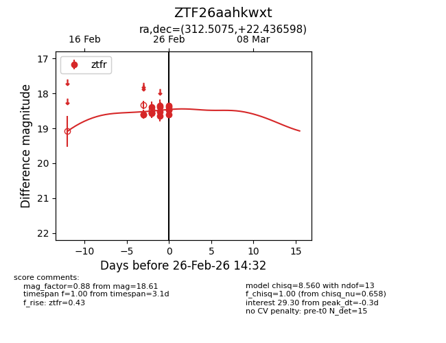
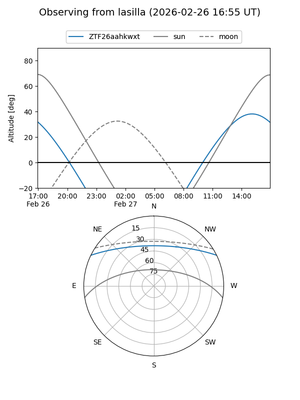
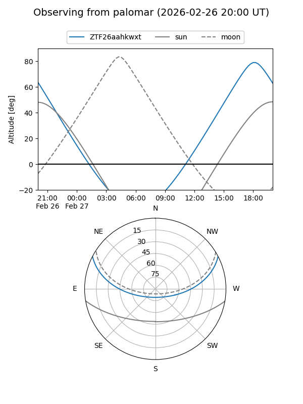
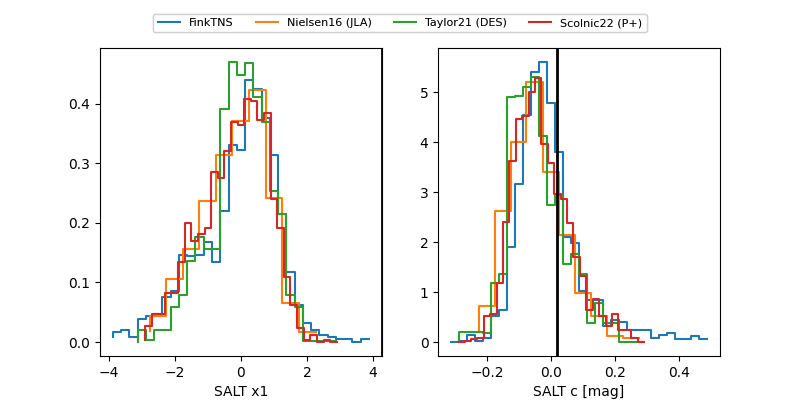

ZTF26aahkwxt
Target ZTF26aahkwxt at 2026-02-26 14:33
Aliases and brokers:
FINK: link
Lasair: link
ALeRCE: link
alt names
ZTF26aahkwxt (ztf,fink_ztf)
Coordinates:
equatorial (ra, dec) = 312.5075,+22.43660
equatorial (HMS+DMS) = 20:50:01.80,+22:26:11.75
galactic (l, b) = (67.2412,-13.46749)
Flags:
Photometry:
last ztfr=18.61
15 ztfr detections
Lightcurve

Visibility


Additional plots
